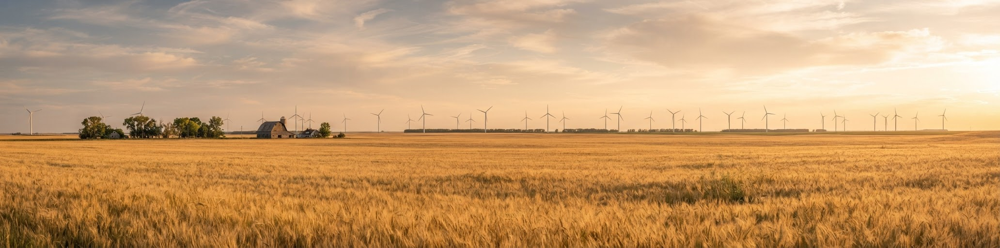

HUD panels are what sits between the rider and the world: dark glass that keeps numbers readable over any photo, controls big enough to hit mid-sprint, and overlays that say plainly when the ride is paused or the bike is gone.
A world ride is a WebGL scene with panels floating over it. The panels share one surface, .race-glass (ink at 70%, 12px blur, 12px corners), and one layer, --z-hud. The class ride and the custom ride have no world, so the same parts render on solid panels (--color-panel) in a page grid. This page covers the panels and how they compose; the numbers inside are on Ride readout, the elevation on Route profile, standings on Leaderboard.
Interval: .race-interval (glass) and .ride-interval (dashboard): the current segment, time left, a fill bar and what comes next.
Resistance: .race-resist (glass), .class-resist (panel) and .ride-control (the custom ride's aside, with .ride-step and the 32 .ride-levels bars).
Scenery prompt: .race-scenery, the optional Google 3D Tiles key form.
Video sync: .class-sync, the Class Start disclosure for the video link and offset.
Glass over the world, plain on the dashboard. Both show kind with a 10px swatch, the round, the time left in Barlow 36px, a 6px fill bar in the kind colour and the next segment.
Work1 of 80:29
Next: Recover · 3:00 at level 6
Recover1 of 82:31
Next: Work · 0:30 at level 24
.race-interval: Work 1 of 8 with 0:29 left; Recover with 2:31 left.
Recover Round 1 of 8
1:38
Next: Work 0:30 at level 24
Steady
23:08
Last stretch
.ride-interval with .ride-kind--rest and --steady (custom-ride default and flat).
HTML
<div class="race-glass race-interval">
<div class="race-interval__head">
<span class="race-interval__label"><span class="race-interval__swatch" style="--kind: var(--color-volt)"></span>Work<span class="race-interval__round">1 of 8</span></span>
<span class="numeral race-interval__left" role="timer" aria-label="29 seconds left in this effort">0:29</span>
</div>
<div class="race-interval__track"><div class="race-interval__fill" style="--value: 3.333%; --kind: var(--color-volt)"></div></div>
<p class="race-interval__next">Next: <span class="race-interval__next-name">Recover</span> · 3:00 at level 6</p>
</div>
Resistance
Three settings, one rule: the two step buttons are at least 48px (--target-ride) and the level sits between them in Barlow with "of 32".
24
Resistance / 32
6
of 32
.race-resist on glass (24 / 32), .class-resist on a panel (6 of 32), .ride-control with 64px .ride-steps and the 32 level bars (current level 6).
Paste a Google Maps Platform key to stream it as photorealistic 3D Tiles. It stays on this device.
.race-scenery: centred 150px above the bottom, 420px wide; ink at 80% for the longer copy. "Stream it" stays disabled until there is a key.
Video sync (Class Start)
.class-sync__toggle closed and open (the chevron turns); the panel it opens is the Video sync form.
Overlays
Two kinds. Paused keeps the world visible: a small glass card in the middle (.race-paused, pointer-events: none), or a 70% ink veil over the class video (.class-video__paused). Lost the bike covers the HUD with ink at 85% and one primary action, Reconnect (.race-lost, .class-lost, .ride-overlay--lost). The custom ride's other overlays (.ride-overlay, ink at 90%) ask for a bike before the ride can start.
Paused on Cathedral Circuit
The world holds still until you pedal again.
Lost the bike
Echelon EX-5s stopped answering. Your rider coasts for 15 seconds while we reconnect; after that the race counts as a DNF.
Race: paused (solo only) and Lost the bike (vs Bots copy: coast 15 seconds, then DNF).
Connect your bike
Wake the Echelon EX-5s with a few pedal strokes, then pick it from the list your browser shows. We’ll remember it next time.
Not in the list? Close the Echelon app on your phone — the bike talks to one device at a time.
Turn on Bluetooth
Your browser can’t see a Bluetooth radio. Switch it on in your computer’s settings — or, if this machine has none, plug in a USB Bluetooth adapter.
Lost the bike
Echelon EX-5s stopped answering. Wake it with a pedal stroke, then reconnect — your ride is saved at 6:52.
Custom ride: no bike, Bluetooth off, lost (.ride-overlay, .ride-overlay--lost).
Paused
Lost the bike
The class keeps going. Pedal to wake the bike and you’ll rejoin where everyone is.
Class ride: the paused video (solo) and Lost the bike (group: the class keeps going).
Ride targets: resistance steps 48px (--target-ride) on glass and class panels, 64px (--space-16) on the custom ride's aside. Level bars are 56px tall and as wide as 32 fit (about 6px at 340px), which is why they are a shortcut, not the only way: the steppers are the target.
Panels: interval 300px and resistance 220px on desktop (--race-hud-interval-width, --race-hud-resistance-width); standings 260px; scenery 420px; the dashboard aside 340px (--dashboard-aside-width). Lost cards max 24rem (--race-lost-width).
Padding: 12px 16px on glass panels, 16px 20px for the power panel on desktop, 12px on resistance.
The race on a phone, solo against your best: the stage below follows the viewport, so open this page at 360px to see the phone HUD.

TELORide
Old Town CriteriumCathedral Circuit · vs your bestWebGL 2
Echelon EX-5s connected
5:01 / 30:00
Behind
Best +0:01
371W
Target 418 W−47 W
Cadence
87rpm
Heart
140bpm
Speed
26.5km/h
Work1 of 80:29
Next: Recover · 3:00 at level 6
+0.5%10 m climbed1.62 km
24
Resistance / 32
360px: power top left, interval at the bottom, inset 12px. Standings, route and resistance are hidden: on a phone the plan drives resistance and the rider watches power. Bar buttons go to 48px (ride.css). The class ride stacks video, then a 2-column grid of tiles; the custom ride stacks telemetry over the control aside.
640px: the route panel joins the interval (stacked); insets grow to 20px.
768px: standings appear top right.
1024px: the bottom HUD becomes three columns (300 · 1fr · 220) and resistance appears; the class ride puts the board in a 280px column; the custom ride puts the control in a 340px aside.
Between 640 and 1023px the scenery prompt sits behind the stacked bottom panels (copied from the design, noted in the mocks README); place it above .race-hud's height when both show.
Glass is color-mix(in srgb, var(--color-ink) 70%, transparent) plus backdrop-filter: blur(12px); the bar uses 75%, the scenery and paused cards 80%, overlays 85% (lost) and 90% (connect). In light theme ink is paper, so the glass turns pale and text turns dark without any extra rule. Wells and tracks on glass are --color-fg at 10% (20% on hover), never a fixed tint, so they read on both.
/* Heavier glass for a bright map (Cliffside Coast at noon) */
.race-glass { background: color-mix(in srgb, var(--color-ink) 80%, transparent); }
Panels are labelled regions (<section aria-label="Interval, route and resistance">, <aside aria-labelledby>). Steps are native buttons. The level bars are a role="group" of buttons with aria-current="true" on the level; give the group a roving tabindex as in the APG toolbar pattern so it is one Tab stop. The sync toggle is an APG disclosure. Paused is role="status"; Lost the bike is role="alert" and follows the alert dialog focus rules.
Keyboard
Key
Action
Tab / Shift+Tab
Bar actions, then (desktop) Lower and Raise resistance, then the level group as one stop.
Enter, Space
Press a step; pick the focused level; open or close the sync panel.
← / → in the level group
Move to the previous or next level; Home / End go to level 1 or 32.
Esc
Leaves full screen. On Lost the bike it does nothing: the only ways out are Reconnect and the bar's Leave.
Focus
When Lost the bike appears, focus moves to Reconnect and the HUD under it is inert; when the bike returns, focus goes back to the control that had it. The paused card never takes focus (it is pointer-events: none); focus stays on Resume. Rings on glass show against the glass, not the photo.
Labelling
Steps say what they do ("Lower resistance", "Raise resistance"); after a press, the announcer says the new level ("Resistance 25 of 32"). Level bars are named "Level 1" to "Level 32". The class resistance value carries aria-label="Resistance 6 of 32". Interval bars on the dashboard are role="progressbar" with a label and value; on glass the time left is a role="timer" with a sentence label ("29 seconds left in this effort").
Contrast
Text on glass floor
Text on glass floor
Secondary on glass floor
Secondary on glass floor
On level bar against off bars
On level bar against off bars
Lost icon and copy
Lost icon and copy
Reconnect label
Reconnect label
Focus ring next to glass
Focus ring next to glass
Motion
Steps press to 96% over --duration-fast; interval fills move linearly over each second; standings rows slide 150ms. All are removed under prefers-reduced-motion. The backdrop blur is static.
Touch
Everything pressed mid-ride is at least 48px: resistance steps, Reconnect (44px plus a 24px gap), and, on phones, the bar buttons. The level bars are below 24px wide and rely on the 2.5.8 equivalent-control exception: the steppers beside them do the same job.
Overlay titles say what happened in three words or fewer: "Paused on Cathedral Circuit", "Lost the bike", "Connect your bike", "Turn on Bluetooth".
The body says what happens next and what is safe: "Your rider coasts for 15 seconds while we reconnect; after that the race counts as a DNF." "Your ride is saved at 6:52." "The class keeps going."
One action per overlay, a verb: Reconnect, Connect bike, Check again.
Interval copy: kind, round ("1 of 8", "Round 1 of 8"), time left, then "Next: Recover · 3:00 at level 6"; the last segment says "Last stretch".
48px steps with a gap: hittable with a sweaty thumb mid-sprint.The class ride header's 36px Pause and Finish (mocks open question 9); raised to 48px on phones.
Paused on Cathedral Circuit
The world holds still until you pedal again.
Paused keeps the world visible and says where you stopped.
Paused
A pause in a race against people or bots: the plan says a race cannot be paused (open question 8). Pause is solo only.
On level bars used --color-volt: 2.8:1 on paper-raised. Now --color-volt-fg.
Mid-ride buttons were 36–40px (open question 9): bar buttons and the class header go to 48px under 640px.
Steps, levels, Reconnect and Stream it had no data-state hooks; added. Reconnect and bar buttons had no press state; added (98%).
Lost the bike was role="alert" with no focus move and live controls under it; the HUD should be inert and focus should land on Reconnect (product change, not CSS).
The 32 level buttons were 32 Tab stops; use a roving tabindex.
.ride-levels uses a raw gap: 3px and .ride-control__level-number a raw 5.5rem in components.css; they want tokens (--ride-levels-gap, --ride-level-size).